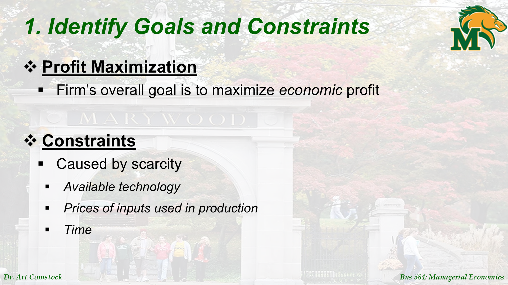
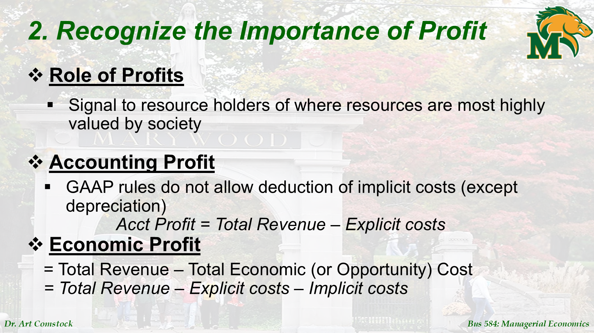
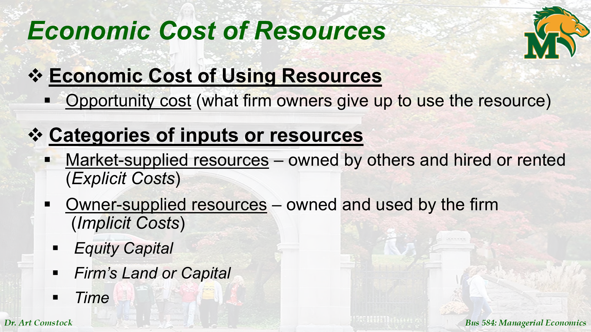
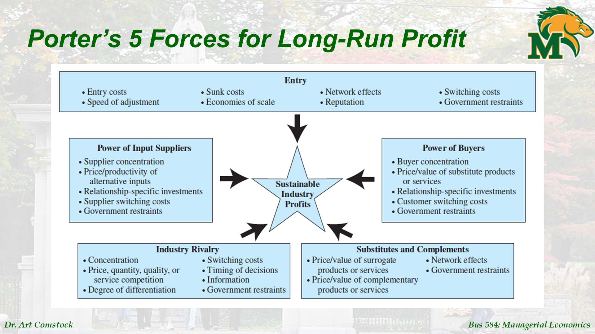
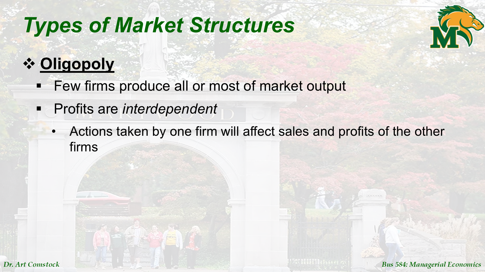
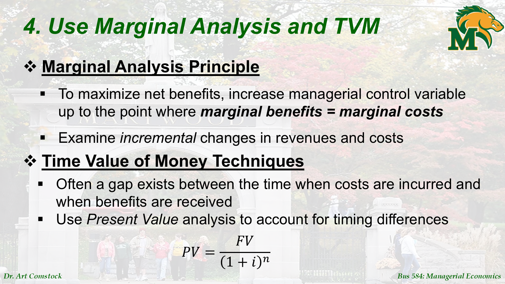
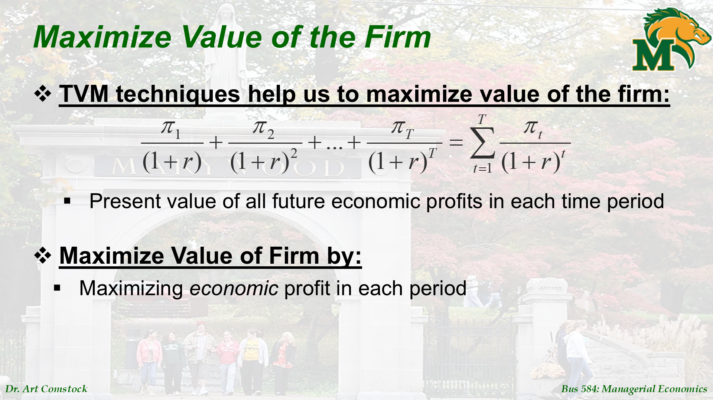
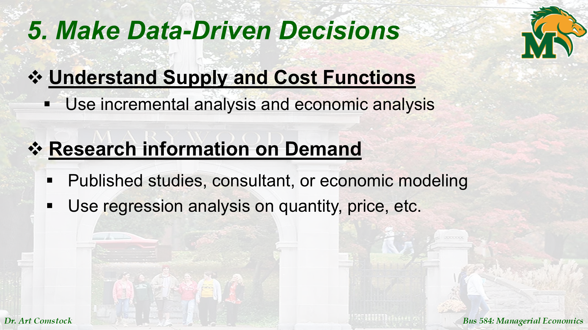
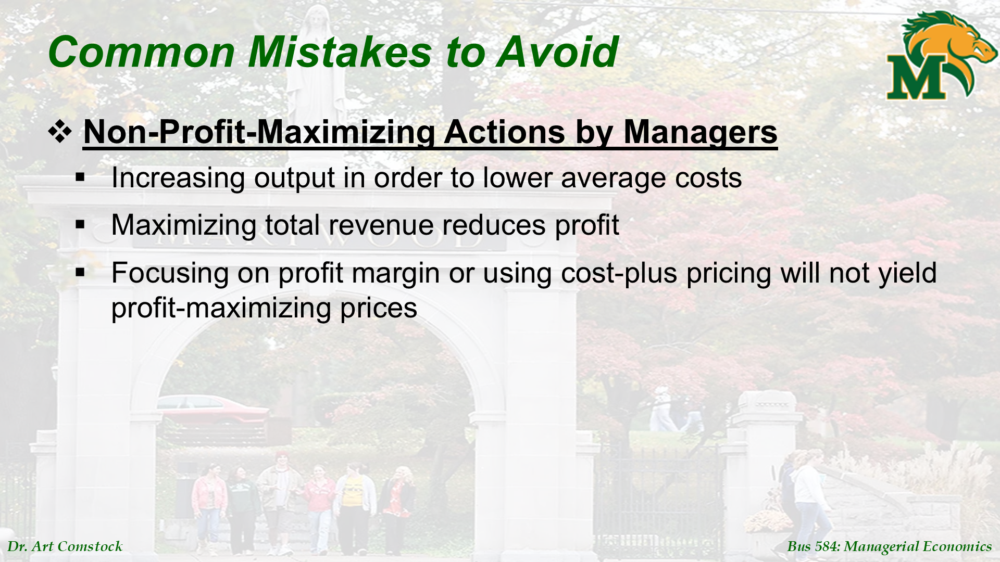
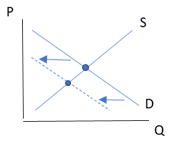

شرح تفصيلي: مقدمة في الاقتصاد الإداري (Introduction)
ده شرح شريحة بشريحة (Slide by Slide) لملف Introduction.pptx عشان تفهم كل كلمة اتقالت.
Slide 1: العنوان
المحتوى: Introduction Managers, Profits, and Markets
الشرح: دي صفحة العنوان. الكورس بيتكلم عن "الاقتصاد الإداري"، وهنركز على 3 حاجات أساسية:
- المديرين (Managers): اللي بياخدوا القرارات.
- الأرباح (Profits): الهدف اللي عايزين نوصله.
- الأسواق (Markets): الملعب اللي بنلعب فيه.
Slide 2: يعني إيه اقتصاد إداري؟

النص الأصلي:
Applies microeconomic theory to business problems Uses economic analysis to make decisions for profit maximization
الشرح:
- الاقتصاد الإداري (Managerial Economics): هو إننا نجيب نظريات الاقتصاد (زي العرض والطلب) ونطبقها جوه الشركة عشان نحل مشاكل البزنس.
- الهدف: نستخدم التحليل ده عشان ناخد قرارات تخلينا نكسب أكتر (Profit Maximization).
- علاقته بالاقتصاد الجزئي (Microeconomics): هو بيعتمد عليه عشان يدرس سلوك الناس (هيشروا ولا لأ؟) وسلوك الشركات المنافسة.
Slide 3: أسئلة المدير الشاطر

النص الأصلي:
How many units should we produce? What price? Five Key Principles of Effective Management
الشرح: المدير بيسأل نفسه كل يوم:
- أنتج كام حتة؟ وأبيعهم بكام؟
- أعين كام موظف وأديهم مرتب كام؟
عشان نجاوب، عندنا 5 مبادئ أساسية للإدارة الناجحة (هنمسكهم واحد واحد في الشرايح الجاية):
- تحديد الأهداف والقيود.
- فهم أهمية الأرباح.
- فهم السوق والحوافز.
- استخدام التحليل الحدي (Marginal Analysis) وقيمة النقود عبر الزمن (TVM).
- الاعتماد على البيانات (Data-driven).
Slide 4: المبدأ 1 - الأهداف والقيود

النص الأصلي:
Identify Goals and Constraints Profit Maximization Constraints: Scarcity, Technology, Prices of inputs, Time
الشرح:
- الهدف (Goal): أي شركة هدفها الأساسي تعظيم الربح الاقتصادي (مش بس تبيع كتير، لا، تكسب صافي ربح عالي).
- القيود (Constraints): بس الدنيا مش "سايبة"، فيه حاجات بتكتفنا:
- الندرة (Scarcity): مفيش مواد خام أو فلوس لا نهائية.
- التكنولوجيا: الآلات اللي عندك ليها قدرة معينة.
- أسعار المدخلات: أسعار الخامات والعمالة بتغلى عليك.
- الوقـت: عندك ديدلاين (Deadline) ووقت محدد للإنتاج.
Slide 5: المبدأ 2 - أهمية الربح (محاسبي vs اقتصادي)

النص الأصلي:
Accounting Profit = Total Revenue – Explicit costs Economic Profit = Total Revenue – Explicit costs – Implicit costs
الشرح: دي نقطة مهمة جداً وفيه ناس كتير بتتلخبط فيها:
- الربح المحاسبي (اللي بيطلع في الورق):
- بنجيب الإيرادات (اللي بعنا بيه) ونشيل منه المصاريف اللي دفعناها فعلاً (نور، مياه، رواتب، إيجار). دي اسمها Explicit Costs.
- الربح الاقتصادي (اللي بناخد عليه القرارات):
- بنجيب الإيرادات ونشيل منها المصاريف اللي دفعناها (Explicit) وكمان نشيل منها حاجة اسمها Implicit Costs (تكاليف ضمنية).
- الربح الاقتصادي هو اللي بيعرفنا إحنا ماشيين صح ولا المفروض نقفل ونروح نشتغل شغلانة تانية.
Slide 6 & 7: تكلفة استخدام الموارد

النص الأصلي:
Opportunity cost (what firm owners give up to use the resource)
الشرح: تكلفة الفرصة البديلة (Opportunity Cost): دي جوهر الربح الاقتصادي.
- مثال: لو أنت صاحب المحل، وشغال فيه بإيدك.
- تكلفتك الصريحة (Explicit): صفر (مش بتدفع لنفسك مرتب).
- تكلفتك الضمنية (Implicit): هي المرتب اللي كنت ممكن تاخده لو اشتغلت مدير في شركة تانية (مثلاً 20 ألف جنيه).
- عشان كده، المحل لازم يكسب أكتر من 20 ألف عشان يعتبر "كسبان اقتصادياً". لو كسب 15 ألف بس، محاسبياً أنت كسبان، بس اقتصادياً أنت خسران (لأن كان أحسنلك تشتغل موظف).
Slide 8: قوى بورتر الخمسة (Porter’s 5 Forces)

الشرح: الشريحة دي بتشير لنموذج مشهور اسمه "Porter's 5 Forces" بيحدد إمتى الشركة تكسب على المدى الطويل، وده بيعتمد على قوة المنافسة في السوق. (التفاصيل في الشرايح اللي بعدها عن أنواع الأسواق)
Slide 9 & 10: المبدأ 3 - الحوافز والأسواق

النص الأصلي:
Market Structure: Number and size of firms, Product differentiation
الشرح:
- الحوافز (Incentives): لازم تفهم إيه اللي بيحرك الموظفين (بونص، ترقية) وإيه اللي بيحرك الزباين (تخفيضات).
- هيكل السوق (Market Structure): السوق بتاعك شكله إيه؟ وده بيتحدد بـ:
- عدد الشركات (كتير ولا قليلين؟).
- هل المنتج بتاعك مميز ولا زي غيره؟
- سهل حد جديد يفتح وينافسك ولا صعب؟
Slide 11: المنافسة الكاملة (Perfect Competition)

الشرح:
- السوق ده عامل زي سوق الخضار:
- بياعين كتير جداً وصغيرين.
- المنتج كله زي بعضه (الطماطم هي الطماطم).
- محدش يقدر يتحكم في السعر (Price-takers) – السعر بتفرضه السوق.
- النتيجة: مفيش ربح اقتصادي على المدى الطويل (لأن لو حد كسب، ناس تانية هتدخل السوق وتنافسه لحد ما الربح يختفي).
Slide 12: الاحتكار (Monopoly)

الشرح:
- عكس المنافسة الكاملة:
- شركة واحدة بس (زي شركة الكهرباء).
- منتج ملوش بديل.
- صعب جداً حد يدخل ينافسها (Barriers to entry).
- النتيجة: الشركة دي تقدر ترفع السعر براحتها وتعمل أرباح اقتصادية كبيرة ومستمرة.
Slide 13: المنافسة الاحتكارية (Monopolistic Competition)

الشرح:
- دي زي المطاعم ومحلات اللبس:
- محلات كتير.
- بس كل واحد بيقدم حاجة مختلفة شوية (طعم مختلف، براند مختلف).
- الشركات هنا عندها "شويه" تحكم في السعر عشان تميز منتجها.
- بس برضه، لو كسبوا كتير، منافسين جدد هيدخلوا يقلدوهم.
Slide 14: احتكار القلة (Oligopoly)

الشرح:
- زي شركات الموبايل (فودافون، اتصالات، أورانج، وي):
- عدد قليل من الشركات مسيطر على السوق كله.
- الشركات دي "بتبص على بعض" (Interdependent).
- يعني لو فودافون عملت عرض، اتصالات لازم ترد عليها. أي قرار بياخده واحد بيأثر على التانيين.
Slide 15: المبدأ 4 - التحليل الحدي وقيمة الزمن

النص الأصلي:
Marginal Analysis Principle: MB = MC Time Value of Money (TVM)
الشرح:
- التحليل الحدي (Marginal Analysis):
- عشان تاخد أحسن قرار، قارن بين الفايدة الإضافية (Marginal Benefit) والتكلفة الإضافية (Marginal Cost).
- القاعدة الذهبية: كمل طالما الفايدة أكبر من التكلفة.
- قيمة النقود عبر الزمن (TVM):
- الجنية النهاردة أحسن من الجنية بكرة. لازم نستخدم "القيمة الحالية" (Present Value) لما نحسب مكاسبنا المستقبلية.
Slide 16: تعظيم قيمة الشركة

تحليل المعادلة (Image Analysis):
المعادلة الأصلية: $$\frac{\pi_1}{(1+r)} + \frac{\pi_2}{(1+r)^2} + ... + \frac{\pi_T}{(1+r)^T} = \sum_{t=1}^{T} \frac{\pi_t}{(1+r)^t}$$
شرح المتغيرات:
- البسط (π - pi): الأرباح الاقتصادية (Economic Profit) في كل فترة زمنية.
- المقام (1+r): معامل الخصم، حيث r هو سعر الفائدة.
- t (الأس): رقم الفترة الزمنية (السنة الأولى، الثانية، ...).
المعنى بالعربي:
- قيمة الشركة = مجموع كل الأرباح المستقبلية بعد "خصمها" للقيمة الحالية.
- كيف نزيد قيمة الشركة؟ بتعظيم الربح الاقتصادي (π) في كل فترة.
Slide 17: المبدأ 5 - القرارات المبنية على البيانات

الشرح:
- مينفعش تمشي بالحب. لازم تستخدم تحليل بيانات (Econometrics).
- لازم تعمل أبحاث سوق (Market Research) وتستخدم معادلات انحدار (Regression) عشان تتوقع الطلب والسعر الصح.
Slide 18: أخطاء شائعة (إوعى تقع فيها)

الشرح: مديرين كتير بيغلطوا الغلطات دي:
- تكبير الشركة وخلاص: بيزود الإنتاج عشان يقلل التكلفة المتوسطة، بس مش واخد باله إنه ممكن ميبيعش ده كله.
- تعظيم الإيرادات مش الأرباح: يبيع كتير بسعر رخيص، ففي الآخر يخسر.
- التسعير بالتكلفة بس (Cost-plus): يقول "الحاجة دي كلفتني 10 هبيعها بـ 12". الطريقة دي غلط لأنها مش بتبص على الزبون مستعد يدفع كام، ممكن الزبون يدفع 20، فأنت كده خسرت.
شرح تفصيلي: التحليل الحدي (Marginal Analysis)
ده شرح شريحة بشريحة لملف Marginal Analysis.pptx. ده أهم ملف في الكورس لأنه بيعلمنا "إزاي نفكر صح".
Slide 1: العنوان

المحتوى: Marginal Analysis for Optimal Decision Making
الشرح: الموضوع كله عن "التحليل الحدي" (Marginal Analysis) عشان ناخد قرارات مثالية (Optimal).
Slide 2: يعني إيه Optimization؟

النص الأصلي:
Maximize (or minimize) an objective function Constrained optimizations Marginal analysis: Change value of choice variable by small increments
الشرح:
- التعظيم (Optimization): يعني عايزين نوصل لأقصى حاجة حلوة (زي الربح) أو أقل حاجة وحشة (زي التكلفة).
- القيود (Constraints): ساعات بنكون مقيدين بميزانية معينة، مينفعش نصرف براحتنا.
- التحليل الحدي: الفكرة إننا بنغير قرارنا "حبة بحبة" (Small Increments). مش بنغير كل حاجة مرة واحدة، بنشوف "لو زودنا حتة واحدة، إيه اللي هيحصل؟".
Slide 3: صافي المنفعة (Net Benefit)

النص الأصلي:
Net Benefit (NB) = Total Benefit (TB) – Total Cost (TC) Maximize NB
الشرح:
- أي قرار بناخده ليه "فايدة" وليه "تكلفة".
- صافي المنفعة (Net Benefit): هو الفرق بينهم.
- هدفنا دايماً إن الرقم ده (NB) يكون أكبر ما يمكن.
Slide 4: المستوى الأمثل (Optimal Level)

الشرح: الشريحة دي بتمهد لفكرة "إمتى أوقف؟". إمتى أعرف إن الكمية اللي بنتجها دي هي أحسن كمية؟ الإجابة في الشريحة الجاية.
Slide 5: المنفعة الحدية والتكلفة الحدية

تحليل الصورة (Image Analysis):
- المعادلة الأولى: $MB = \frac{\Delta TB}{\Delta A}$
- (التغير في المنفعة الكلية مقسوم على التغير في النشاط).
- المعادلة الثانية: $MC = \frac{\Delta TC}{\Delta A}$
- (التغير في التكلفة الكلية مقسوم على التغير في النشاط).
- لاحظ إن المثلث $\Delta$ معناه "تغير".
Slide 6: العلاقة بين الحدي والكلي

تحليل الرسم البياني (Image Analysis):
Panel A - Measuring slopes along TB and TC (الرسمة العلوية):
- المنحنى الأحمر (TB): منحنى المنفعة الكلية (Total Benefit).
- النقاط المسماة: c, c', c''
- المنحنى الأحمر (TC): منحنى التكلفة الكلية (Total Cost).
- النقاط المسماة: d, d', d''
- أكبر مسافة: عند A* = 350، الفرق بين TB و TC أقصى ما يمكن.
Panel B - Marginals give slopes of totals (الرسمة السفلية):
- الخط الأحمر (MC = slope of TC): يتجه لفوق.
- عند (200, $6.40) وعند (600, $8.20).
- الخط الأحمر (MB = slope of TB): يتجه لتحت.
- عند (200, $5.40) وعند (600, $3.20).
- نقطة التقاطع: عند A* = 350 تقريباً، الخطين بيتقاطعوا عند ~$5.20 (MB = MC).
Slide 7: إزاي تلاقي الحل الأمثل؟

تحليل الرسم البياني (Image Analysis):
- المنحنى الأسود (Parabola/قطع مكافئ): ده منحنى صافي المنفعة (Net Benefit).
- شكله: مقلوب على شكل U (أو جرس). بيطلع لفوق، يوصل للقمة، ثم ينزل.
- القمة (Point M): عند مستوى نشاط A* = 350، صافي الربح أقصى ما يمكن (حوالي $310).
- يسار القمة (MB > MC): المنحنى طالع لفوق. كل ما تزود النشاط، صافي ربحك بيزيد. دوس وكمل!
- يمين القمة (MB < MC): المنحنى نازل لتحت. كل ما تزود النشاط، صافي ربحك بيقل. وقف!
- عند القمة (MB = MC): ده مكان الأمثلية. مش هتقدر تكسب أكتر من كده.
Slide 8: قاعدة اتخاذ القرار (مهمة جداً)

النص الأصلي:
If MB > MC -> Increase Activity If MC > MB -> Decrease Activity Optimal Level: MB = MC
الشرح: القاعدة دي بنمشي عليها في حياتنا كلها:
- لو MB > MC: (الفايدة من الخطوة الجاية أكبر من تكلفتها) -> دوس وكمل، مصلحتك لسه بتزيد.
- لو MC > MB: (التكلفة بقت أكبر من الفايدة) -> وقف فوراً، أنت كده بتخسر من صافي ربحك.
- إمتى تقف؟ لما MB = MC. دي النقطة اللي عندها مش هتقدر تكسب ولا مليم زيادة. دي القمة (Optimal).
Slide 9: أنواع التكاليف اللي نتجاهلها

النص الأصلي:
Sunk costs: Previously paid & cannot be recovered (Ignore) Fixed costs: Constant (Ignore) Average costs: (Ignore)
الشرح: لما تيجي تاخد قرار "حدي" (أنتج زيادة ولا لأ)، فيه تكاليف لازم "تطنشها":
- المصاريف الغارقة (Sunk Costs): فلوس اتصرفت زمان ومش راجعة (زي مصاريف البحث والتطوير، أو تمن الرخصة). خلاص راحت، متبكيش على اللبن المسكوب.
- المصاريف الثابتة (Fixed Costs): الإيجار مثلاً. أنتجت حتة أو ألف حتة، الإيجار ثابت. فمش هيأثر على قرار "الحتة الزيادة".
- المتكاليف المتوسطة (Average Costs): دي بتضلل، ركز بس على التكلفة الحدية (MC).
Slide 10: التعظيم المقيد (Constrained Optimization)

تحليل الصورة (Image Analysis):
- المفهوم الرئيسي: MB/P (المنفعة الحدية لكل جنيه).
- الفكرة: لو عندك ميزانية محدودة، مينفعش تبص على MB بس. لازم تبص على "أفضل صفقة" (Best buy / Most value for your money).
- القاعدة: اختار النشاط اللي بيديك أعلى MB/P.
Slide 11: معادلة التعظيم المقيد

تحليل المعادلة (Image Analysis):
-
المعادلة: $$ \frac{MB_A}{P_A} = \frac{MB_B}{P_B} $$
-
الشرح:
- البسط: المنفعة الحدية (MB) من كل نشاط.
- المقام: سعر (P) كل نشاط.
- المعنى بالعربي: لازم "الجنيه" اللي بتصرفه على A يجيبلك نفس الفايدة اللي بيجيبها الجنيه على B. لو واحدة أحسن، حول فلوسك ليها.
شرح تفصيلي: العرض والطلب (Supply and Demand)
ده شرح شريحة بشريحة لملف Supply and Demand.pptx. ده أساس الاقتصاد كله.
Slide 1: العنوان

المحتوى: Demand, Supply, and Market Equilibrium
الشرح: هنتكلم عن التلات أعمدة للأسواق: الطلب (الزباين)، العرض (الشركات)، وتوازن السوق (السعر).
Slide 2: قانون الطلب (Demand)

النص الأصلي:
Law of Demand: Quantity demanded (Qd) increases as price falls Inverse relationship
الشرح:
- قانون الطلب: بديهي جداً. لما الحاجة بترخص، الناس بتشتري منها كتير. ولما بتغلى، الناس بتقلل شراء.
- العلاقة بين السعر ($P$) والكمية المطلوبة ($Q_d$) هي علاقة عكسية (Inverse).
Slide 3: العوامل المؤثرة في الطلب

النص الأصلي:
Qd affected by: Price (P), Income (M), Prices of related goods (PR), Tastes, Expected future price (Pe), Number of consumers (N)
الشرح: إيه اللي بيخليك تشتري موبايل معين؟
- سعره ($P$): لو غالي مش هجيبه.
- دخلك ($M$): لو قبضت مكافأة، هتشتري أكتر.
- أسعار حاجات تانية ($P_R$): لو سعر الآيفون زاد، ممكن أشتري سامسونج (بديل).
- الذوق (Tastes): أنا بحب البراند ده.
- التوقعات ($P_e$): لو عرفت إنه هيغلى الأسبوع الجاي، هنزل أشتريه دلوقتي.
- عدد الناس ($N$): لما السكان يزيدوا، الطلب على الأكل بيزيد.
Slide 4: تأثير الدخل (Normal vs. Inferior)

الشرح: لما دخلك يزيد، بتتصرف إزاي؟
- سلع عادية (Normal Good): بتشتري منها أكتر (زي اللحمة، اللبس البراند). أغلب السلع كده.
- سلع رديئة (Inferior Good): بتشتري منها أقل (زي المواصلات العامة المزدحمة، أو الأكل الشعبي الرخيص). لما ربنا يوسع عليك بتركب تاكسي وبتبطل تركب أتوبيس.
Slide 5: السلع المرتبطة (Substitutes & Complements)

الشرح: علاقة السلع ببعضها:
- بدائل (Substitutes): زي بيبسي وكوكاكولا. لو سعر البيبسي زاد، الناس هتجري تشتري كوكاكولا (والعكس). العلاقة بينهم طردية.
- مكملات (Complements): زي الشاي والسكر. لو سعر السكر غلي جداً، الناس هتقلل شرب شاي (فالطلب على الشاي هيقل). العلاقة بينهم عكسية.
Slide 6: دالة الطلب العامة

الشرح: دي المعادلة الرياضية اللي بتجمع كل العوامل دي مع بعض. $Q_d = f(P, M, P_R, ...)$
Slide 7: رسم منحنى الطلب

النص الأصلي:
Inverse demand function: P is plotted on vertical axis Movement along demand curve vs. Shift in demand
الشرح:
- لما نيجي نرسم، بنحط السعر ($P$) على المحور الراسي (Y-axis)، والكمية ($Q$) على المحور الأفقي (X-axis).
- هام جداً:
- لو السعر بس هو اللي اتغير -> بنتحرك على نفس الخط (Movement along the curve).
- لو أي حاجة تانية (دخل، ذوق..) اتغيرت -> الخط كله بيتحرك بيتشفت (Shift).
Slide 8: منحنى الطلب (شكل بياني) (1)

تحليل المحتوى (Image Analysis):
المعادلة: $$Q_d = 1,400 - 10P$$
الجدول (يسار الرسمة):
| السعر (Price) | الكمية المطلوبة (Quantity demanded) |
|---|---|
| 140 | 0 |
| 120 | 200 |
| 100 | 400 |
| 80 | 600 |
| 60 | 800 |
| 40 | 1,000 |
| 20 | 1,200 |
الرسم البياني:
- المنحنى الأزرق ($D_0$): خط نازل لتحت (Downward Sloping).
- نقاط مهمة:
- النقطة A: عند سعر $100 والكمية 400.
- النقطة B: عند سعر $80 والكمية 600.
- الأسهم: تشير إلى اتجاه الحركة على المنحنى.
Slide 9: تغيرات الطلب - Overview

تحليل الصورة (Image Analysis):
- العوامل اللي بتنقل منحنى الطلب كله:
- دخل ($M$)، الذوق (Tastes)، أسعار السلع البديلة والمكملة ($P_R$)، التوقعات ($P_e$)، عدد المستهلكين ($N$).
Slide 10: زيادة ونقص الطلب (Graph)

تحليل الرسم البياني (Image Analysis):
- المحاور: السعر (Price) على Y، الكمية المطلوبة ($Q_d$) على X.
- ثلاث منحنيات:
- $D_0$: منحنى الطلب الأصلي (الوسط).
- $D_1$: منحنى الطلب بعد الزيادة (يمين). عند $80، الكمية بقت 800 بدل 600.
- $D_2$: منحنى الطلب بعد النقص (شمال). عند $60، الكمية بقت 400 بدل 800.
- الأسهم: توضح اتجاه الحركة (Demand Increase -> يمين، Demand Decrease -> شمال).
- نقاط البيانات: ($60,400), ($60,800), ($80,600), ($80,800).
Slide 11: ملخص تغيرات الطلب (Table)

تحليل الجدول (Table Analysis): | المحدد (Determinant) | زيادة الطلب (Shift Right) | نقص الطلب (Shift Left) | |---|---|---| | 1. الدخل ($M$) - سلعة عادية | $M$ يرتفع | $M$ ينخفض | | 1. الدخل ($M$) - سلعة رديئة | $M$ ينخفض | $M$ يرتفع | | 2. سعر البديل ($P_R$) | $P_R$ يرتفع | $P_R$ ينخفض | | 2. سعر المكمل ($P_R$) | $P_R$ ينخفض | $P_R$ يرتفع | | 3. أذواق المستهلكين ($T$) | $T$ يرتفع | $T$ ينخفض | | 4. السعر المتوقع ($P_e$) | $P_e$ يرتفع | $P_e$ ينخفض | | 5. عدد المستهلكين ($N$) | $N$ يرتفع | $N$ ينخفض |
Slide 12: قانون العرض (Supply)

النص الأصلي:
Law of Supply: Quantity supplied (Qs) rises as price rises Positive relationship
الشرح:
- نيجي بقى ناحية الشركات.
- لما سعر الحاجة يزيد في السوق، الشركات بتفرح وعايزة تبيع أكتر عشان تكسب.
- العلاقة بين السعر والكمية المعروضة طردية (Positive).
Slide 13: العوامل المؤثرة في العرض

العوامل المؤثرة في الكمية المعروضة ($Q_s$):
- السعر ($P$): لو سعر السلعة زاد، الشركات هتنتج أكتر.
- سعر المدخلات ($P_I$): تكلفة المواد الخام. لو الخشب رخص، النجار هينتج كراسي أكتر.
- أسعار السلع المرتبطة في الإنتاج ($P_r$): لو سعر منتج بديل زاد، ممكن أحول إنتاجي ليه.
- التكنولوجيا ($T$): لو جبت آلات حديثة، الإنتاج هيزيد بتكلفة أقل.
- السعر المتوقع ($P_e$): لو توقعت إن السعر هيزيد بكرة، ممكن أخزن النهارده وأبيع بكرة.
- عدد الشركات ($F$): كل ما شركات أكتر تدخل السوق، العرض الكلي بيزيد.
- الضرائب (Taxes): لو الحكومة فرضت ضرايب، التكلفة بتزيد فالإنتاج بيقل.
Slide 14: السلع المرتبطة في الإنتاج

الشرح:
- بدائل في الإنتاج: مصنع عربيات بيعمل موديل "سيدان" وموديل "دفع رباعي". لو سعر الدفع الرباعي زاد، هيحول عماله وموارده عشان ينتج دفع رباعي أكتر ويقلل السيدان.
- مكملات في الإنتاج: زي اللحمة والجلد. وأنت بتدبح عشان تاخد لحمة، غصب عنك بيطلعلك جلد. فلو سعر اللحمة زاد ودبحت أكتر، عرض الجلد هيزيد أوتوماتيك.
Slide 16: رسم منحنى العرض

الشرح:
- تغير الكمية المعروضة: حركة على نفس الخط (بسبب تغير السعر بس).
- تغير العرض (Shift): الخط كله يتحرك (بسبب التكنولوجيا أو الخامات).
Slide 17: منحنى العرض (شكل بياني)

تحليل المحتوى (Image Analysis):
المعادلة: $$Q_s = -400 + 20P$$
الجدول (يسار الرسمة):
| السعر (Price) | الكمية المعروضة (Quantity supplied) |
|---|---|
| 140 | 2,400 |
| 120 | 2,000 |
| 100 | 1,600 |
| 80 | 1,200 |
| 60 | 800 |
| 40 | 400 |
| 20 | 0 |
الرسم البياني:
- المنحنى الأزرق ($S_0$): خط طالع لفوق (Upward Sloping).
- نقاط مهمة: R, S وباقي النقاط على طول الخط.
- المعنى: كل ما السعر يزيد، الكمية المعروضة بتزيد (علاقة طردية).
Slide 18: تغيرات العرض (Overview)

الشرح:
- هنا بنتكلم عن العوامل اللي بتنقل منحنى العرض كله من مكانه (Shifts).
- القاعدة العامة:
- أي حاجة تخلي الإنتاج أسهل أو أرخص -> زيادة العرض (Shift Right).
- أي حاجة تصعب الإنتاج أو تغليه -> نقص العرض (Shift Left).
Slide 19: زيادة العرض (Increase in Supply)

تحليل الرسم البياني (Image Analysis):
- الخطوط: عندنا 3 خطوط زرقاء، الأساسي هو اللي في النص ($S_0$).
- الحركة: السهم بيشاور ناحية اليمين (تحت) رايح للمنحنى $S_1$.
- المثال بالأرقام:
- عند السعر $40، الكمية المعروضة على المنحنى القديم ($S_0$) كانت 400 وحدة.
- لما العرض زاد (تحول لـ $S_1$)، عند نفس السعر $40، الشركات بقت تنتج 800 وحدة.
- الاستنتاج: زيادة العرض معناها إنتاج كمية أكبر عند نفس السعر (أو نفس الكمية بسعر أرخص).
Slide 20: ملخص تغيرات العرض (Table)

تحليل الجدول (Table Analysis): | المحدد (Determinant) | زيادة العرض (Shift Right) | نقص العرض (Shift Left) | |---|---|---| | 1. سعر المدخلات ($P_i$) | $P_i$ ينخفض | $P_i$ يرتفع | | 2. سعر سلعة بديلة في الإنتاج | $P_r$ ينخفض | $P_r$ يرتفع | | 2. سعر سلعة مكملة في الإنتاج | $P_r$ يرتفع | $P_r$ ينخفض | | 3. مستوى التكنولوجيا ($T$) | $T$ يرتفع | $T$ ينخفض | | 4. السعر المتوقع ($P_e$) | $P_e$ ينخفض | $P_e$ يرتفع | | 5. عدد الشركات في السوق ($F$) | $F$ يرتفع | $F$ ينخفض |
Slide 21: توازن السوق (Equilibrium)

النص الأصلي:
Qd = Qs Shortage vs. Surplus
الشرح: السوق بيوصل للراحة (التوازن) لما اللي الناس عايزاه = اللي الشركات أنتجته. بنساوي المعادلتين ببعض ($Q_d = Q_s$).
Slide 22: شكل التوازن (Graph + Table)

تحليل المحتوى (Image Analysis):
الجدول (يسار الرسمة):
| السعر (P) | الكمية المعروضة (Qs) | الكمية المطلوبة (Qd) | الفائض/العجز |
|---|---|---|---|
| 140 | 2,400 | 0 | +2,400 |
| 120 | 2,000 | 200 | +1,800 |
| 100 | 1,600 | 400 | +1,200 |
| 80 | 1,200 | 600 | +600 |
| 60 | 800 | 800 | 0 (توازن) |
| 40 | 400 | 1,000 | -600 |
| 20 | 0 | 1,200 | -1,200 |
المعادلات:
- $Q_s = -400 + 20P$
- $Q_d = 1,400 - 10P$
الرسم البياني (يمين الرسمة):
- نقطة التوازن (A): عند سعر $60 وكمية 600 وحدة.
- فوق A (Surplus): السعر عالي فالعرض أكبر من الطلب.
- تحت A (Shortage): السعر منخفض فالطلب أكبر من العرض.
Slide 23: فائض المستهلك (Consumer Surplus)

تحليل الرسم البياني (Image Analysis):
- المثلث (Consumer Surplus): المنطقة اللي تحت منحنى الطلب وفوق خط السعر.
- المعنى: الفرق بين اللي الزبون "مستعد يدفعه" واللي "دفعه فعلاً". ده كسب للمستهلك.
Slide 24: قيمة التبادل السوقي (Value of Market Exchange)

تحليل الرسم البياني (Image Analysis):
- الرسمة الرئيسية:
- المحاور: السعر والقيمة (Price and Value) على Y، الكمية ($Q_d$ and $Q_s$) على X.
- $D_0$: منحنى الطلب (يمثل قيمة الشراء للمستهلك).
- $S_0$: منحنى العرض (يمثل تكلفة الإنتاج للمنتج).
- نقطة التوازن (A): عند سعر ~$60 وكمية ~400.
- المناطق الملونة:
- المثلث العلوي (فوق A): $\triangle uvs$ = فائض المستهلك (Consumer Surplus).
- المثلث السفلي (تحت A): $\triangle vws$ = فائض المنتج (Producer Surplus).
- الدائرة المكبرة (Blow up):
- عند الكميات 398, 399, 400 -> بنشوف إن الفرق بين القيمة ($100.20, 100.10, 100$) والتكلفة بيقل.
- عند الوحدة 400، لا يوجد مزيد من الربح من التبادل.
Slide 25: تغير التوازن (Demand Shift)

تحليل الرسم البياني:
- السيناريو: منحنى الطلب يتحرك (العرض ثابت).
- إذا زاد الطلب (Shift Right) -> السعر والكمية يزيدوا.
Slide 26: تغير التوازن (Supply Shift)

تحليل الرسم البياني:
- السيناريو: منحنى العرض يتحرك (الطلب ثابت).
- إذا زاد العرض (Shift Right) -> السعر يقل والكمية تزيد.
Slides 27-30: سيناريوهات مختلطة

الشرح:
- لو الطلب والعرض اتغيروا مع بعض، التأثير على السعر والكمية بيتوقف على "مين أقوى".
- بنحتاج نشوف الرسمة عشان نحدد النتيجة النهائية.
Slide 31: السقف والأرضية (Ceiling & Floor)

تحليل الرسم البياني (Image Analysis):
- Price Ceiling (الرسمة اللي فوق/يمين):
- السعر الحكومي ($P_c$) محطوط تحت سعر التوازن.
- بص على المسافة الأفقية بين العرض والطلب: دي بتمثل الـ Shortage.
- Price Floor (الرسمة اللي تحت):
- السعر الحكومي ($P_f$) محطوط فوق سعر التوازن.
- المسافة دي تمثل الـ Surplus (فائض).
شرح تفصيلي: مسائل الإكسل (Week 1 Practice Problems)
ده شرح خطوة بخطوة للمسائل الموجودة في ملف الإكسل. المسائل دي تطبيق عملي على القوانين اللي خدناها.
السؤال الأول: بيتزا باري (Parry's Pizza)
المعطيات:
- الإيرادات (Revenues): 800,000
- تكلفة البضاعة المباعة (COGS): 400,000
- مصاريف إدارية: 40,000
- مصاريف بيع: 60,000
- فوائد بنكية: 20,000
- الضريبة: 40%
- معلومة إضافية خطيرة: باري (صاحب المحل) مهندس أصلاً، ولو اشتغل بشهادته هياخد 53,000 (دي تكلفة الفرصة البديلة).
المطلوب 1: احسب الربح المحاسبي (Accounting Profit) ده اللي المحاسب بيحسبه في الدفاتر "الرسمية".
- إجمالي مصاريف التشغيل: $400,000 + 40,000 + 60,000 = 500,000$
- الدخل من التشغيل: $800,000 (\text{Revenues}) - 500,000 = 300,000$
- صافي الدخل قبل الضريبة: $300,000 - 20,000 (\text{Interest}) = 280,000$
- قيمة الضريبة: $280,000 \times 40\% = 112,000$
- صافي الربح المحاسبي: $280,000 - 112,000 = \mathbf{168,000}$
المطلوب 2: احسب الربح الاقتصادي (Economic Profit) ده اللي بيبين إحنا "فعلاً" كسبانين ولا بنضحك على نفسنا.
- القانون: $\text{الربح الاقتصادي} = \text{الربح المحاسبي} - \text{التكاليف الضمنية}$
- التكاليف الضمنية هنا هي مرتب باري اللي ضاع عليه (53,000).
- الحسـبة: $168,000 - 53,000 = \mathbf{115,000}$
- القرار: بما إن الرقم موجب، يبقى باري قراره صح، والمشروع ناجح جداً لأنه بيكسبه أكتر من الوظيفة.
السؤال الثاني: حسابات العرض والطلب
المعطيات:
- معادلة الطلب: $Q_d = 680 - 9P + 0.006M - 4P_R$
- معادلة العرض: $Q_s = 30 + 3P$ (موجودة في الحل)
- أرقام مساعدة:
- الدخل ($M$) = 15,000
- سعر السلعة البديلة ($P_R$) = 20
أول خطوة: تبسيط معادلة الطلب عوض بالأرقام اللي مديهالك في معادلة الطلب عشان تبقى بدلالة $P$ بس. $$ Q_d = 680 - 9P + 0.006(15,000) - 4(20) $$ $$ Q_d = 680 - 9P + 90 - 80 $$ $$ \mathbf{Q_d = 690 - 9P} $$ (دي المعادلة النهائية اللي هنشتغل بيها)
المطلوب 1: الكمية المطلوبة لو السعر = 40
- عوض عن $P$ بـ 40 في معادلة الطلب المبسطة.
- $Q_d = 690 - 9(40)$
- $Q_d = 690 - 360 = \mathbf{330}$
المطلوب 2: السعر والكمية عند التوازن (Equilibrium)
- عند التوازن: الطلب = العرض ($Q_d = Q_s$).
-
ساويهم ببعض: $$ 690 - 9P = 30 + 3P $$
-
ودي الـ $P$ مع بعض والأرقام مع بعض: $$ 690 - 30 = 3P + 9P $$ $$ 660 = 12P $$
-
هات قيمة $P$: $$ P = 660 / 12 = \mathbf{55} $$ (ده سعر التوازن)
-
عوض بالـ 55 في أي معادلة عشان تجيب الكمية ($Q$): $$ Q = 30 + 3(55) = 30 + 165 = \mathbf{195} $$ (دي كمية التوازن)
المطلوب 3: ماذا يحدث لو السعر = 40؟
- نقارن السعر ده (40) بسعر التوازن (55).
- بما إن السعر أرخص من الطبيعي، الناس هتتجنن وتشتري (الطلب هيزيد).
- نشوف بالأرقام:
- الطلب ($Q_d$) حسبناه في أول مطلوب = 330.
- العرض ($Q_s$) = $30 + 3(40) = 30 + 120 = \mathbf{150}$.
- واضح إن $Q_d > Q_s$ (الطلب أكبر بكتير).
- الفرق بينهم اسمه عجز (Shortage).
- قيمة العجز = $330 - 150 = \mathbf{180}$ وحدة.
السؤال الثالث: سوق الأحذية الرياضية في تونس (Tennis Sneakers)
المعطيات: السوق كان في حالة توازان، وحصلت شوية أحداث. عايزين نعرف إيه تأثير الأحداث دي على السعر (Price) و الكمية (Quantity).
صورة الحل الكامل (Supply & Demand Graphs):
تم استخراج الرسوم البيانية التالية من ملف الإجابات (KEY File):

الحالة 1: نقص الجرافيت (Tennis Rackets غليت)
- مضارب التنس (Rackets) والأحذية (Sneakers) يعتبروا سلع مكملة (Complements). (اللي بيلعب تنس محتاج الاتنين).
- لما سعر المضارب يزيد جداً -> الناس هتقلل لعب تنس -> الطلب على الأحذية هيقل.
- النتيجة: منحنى الطلب يتحرك لليسار (Decrease in Demand).
- الأثر النهائي: السعر يقل ($\downarrow P$) والكمية تقل ($\downarrow Q$).

الحالة 2: أنس جابر (Ons Jabeur) كسبت واشتهرت
- شهرة أنس جابر هتخلي ناس كتير في تونس تحب التنس وعايزة تلعبه (تغير في الذوق/Tastes).
- الناس هتجري تشتري أحذية تنس.
- النتيجة: منحنى الطلب يتحرك لليمين (Increase in Demand).
- الأثر النهائي: السعر يزيد ($\uparrow P$) والكمية تزيد ($\uparrow Q$).

الحالة 3: إضرابات العمال (Labor Strikes)
- الإضرابات بتعطل الإنتاج، وده بيعتبر زيادة في تكلفة الإنتاج أو نقص في القدرة على الإنتاج.
- النتيجة: منحنى العرض يتحرك لليسار (Decrease in Supply).
- الأثر النهائي: السعر يزيد ($\uparrow P$) والكمية تقل ($\downarrow Q$). (لأن البضاعة بقت نادرة).

السؤال الرابع: مدير خدمة العملاء (Optimization)
المعطيات:
- المدير يقدر يعين نوعين من الموظفين:
- ثانوي (HS): مرتبه 20,000.
- جامعي (B): مرتبه 40,000.
- الميزانية (Payroll): 160,000.
- الهدف: خدمة أكبر عدد من الزبائن (Maximize Customers Served).
الحل باستخدام التحليل الحدي ($MB/P$): لازم نحسب "المنفعة لكل دولار" لكل موظف. المنفعة هنا هي (عدد الزبائن الإضافي اللي الموظف بيخدمهم = Marginal Product). والسعر هو المرتب.
الجدول المحسوب (Marginal Benefit per Wage):
- الموظف الجامعي بياخد ضعف الثانوي، فلازم يكون بينتج (بيخدم زبائن) أكتر من الضعف عشان يفضله.
- نحسب $MP / Wage$ لكل واحد:
- ثانوي (HS): $80/20k = 0.004$
- جامعي (B): $90/40k = 0.00225$
خطوات التعيين (معانا 160 ألف):
- أول موظف: نعين "أول ثانوي" (0.004) ولا "أول جامعي" (0.00225)؟ -> ثانوي. (باقي 140k).
- تاني موظف: نعين "تاني ثانوي" (60/20k=0.003) ولا "أول جامعي" (0.00225)؟ -> ثانوي. (باقي 120k).
- تالت موظف: نعين "تالت ثانوي" (50/20k=0.0025) ولا "أول جامعي" (0.00225)؟ -> ثانوي. (باقي 100k).
- رابع موظف: نعين "رابع ثانوي" (40/20k=0.002) ولا "أول جامعي" (0.00225)؟ -> جامعي. (باقي 60k).
- دلوقتي نقارن: "رابع ثانوي" (0.002) ولا "تاني جامعي" (80/40k=0.002)؟ -> الاتنين زي بعض!
- ناخدهم هما الاتنين.
- نعين رابع ثانوي (باقي 40k).
- ونعين تاني جامعي (باقي 0).
الخلاصة (التشكيلة المثالية):
- نعين 4 موظفين ثانوي (هيكلّفونا 80,000).
- نعين 2 موظفين جامعي (هيكلّفونا 80,000).
- الإجمالي 160,000 (الميزانية بالظبط).
- دي التشكيلة اللي بتجيب أقصى منفعة.